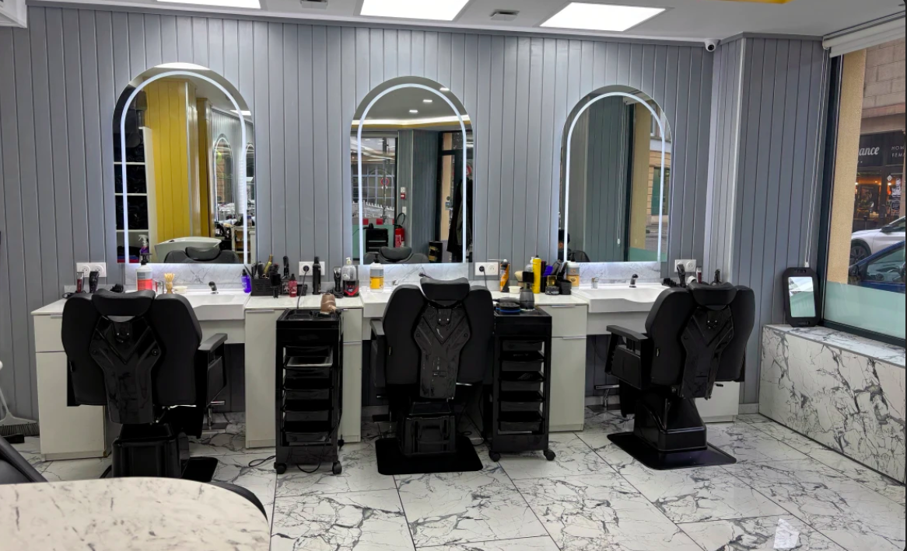
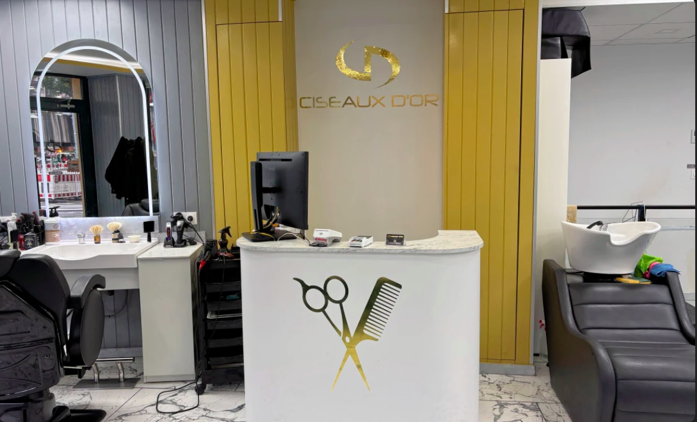
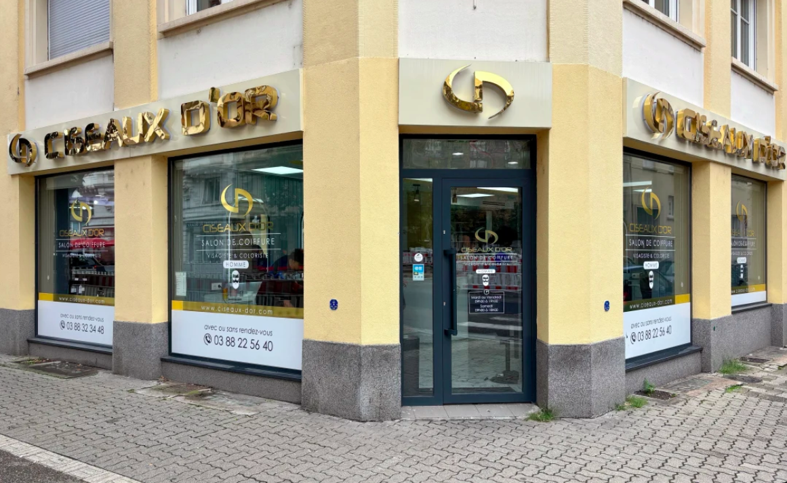
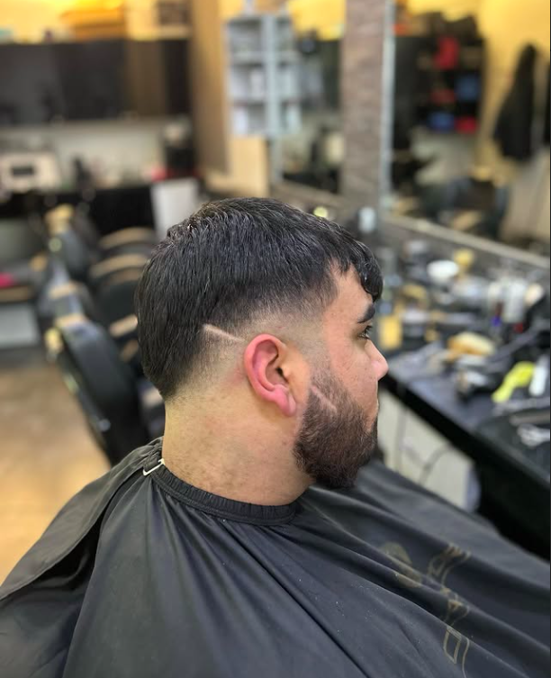
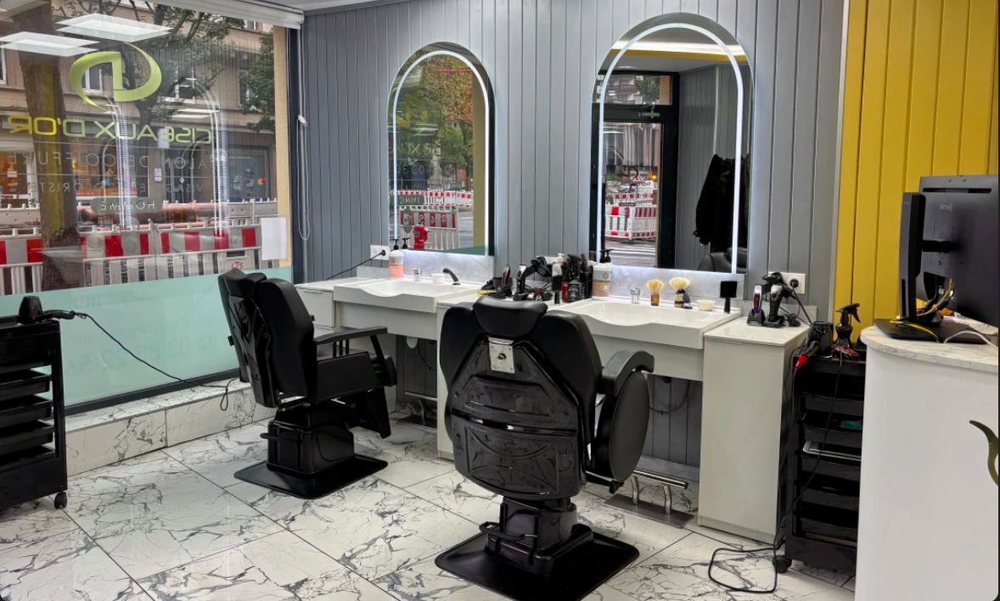

Coupe homme
Shampoing, coupe personnalisée et coiffage soignés.
Salon de coiffure & barbier · Homme
L'art de la coupe et de la barbe, mené comme un travail de précision — au cœur de Strasbourg.


Notre signature
La coupe est un geste de précision, pas une simple habitude.
Chez Ciseaux d'Or, chaque passage se pense comme une ligne nette : écoute, justesse du trait, finition soignée. Un salon dédié à l'homme, élégant et détendu, où l'on prend le temps de bien faire.
Une équipe passionnée et à l'écoute.
Une sélection de qualité pour vos cheveux.
Un accueil flexible, selon votre disponibilité.
Un salon facile d'accès en centre-ville.
Prestations
Shampoing, coupe personnalisée et coiffage soignés.
Un soin du visage avec masque pour nettoyer, purifier et rafraîchir la peau.
Taille de barbe, contours et soin pour une barbe nette et entretenue.
Coupe enfant (−10 ans), en douceur et en confiance.
Prestations pour la coupe, la barbe et le soin. Réservez le créneau qui vous convient.
Réserver une prestation
Une adresse, une exigence — reconnaissable à sa ligne d'or.
Réalisations
Portfolio
Chaque coupe est pensée pour le visage — la ligne, la matière, le mouvement.


L'expérience
Un cadre soigné, une lumière chaude et une attention réelle portée au détail. Ici, la coupe se vit autant qu'elle se voit — dans une atmosphère élégante et détendue, pensée pour l'homme.
Nous trouver
En plein cœur de Strasbourg. Reconnaissable à sa façade et sa ligne d'or.
Réservez en ligne ou appelez le salon — du mardi au samedi, de 9h à 19h.